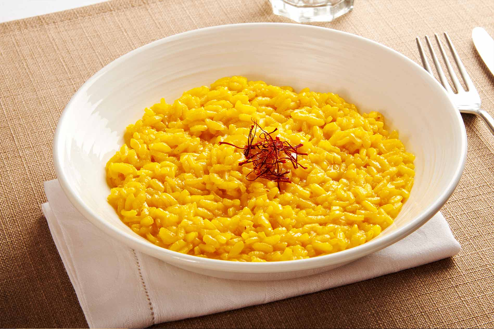

One of the simplest, yet most luxurious rice dishes, this creamy risotto gets its vivid color and flavor from saffron. However, the first recipe under the name risotto alla Milanese was found in Giovanni Felice Luraschi's 1829 cookbook Nuovo Cuoco Milanese Economico, and over time, this saffron-flavored classic became a traditional accompaniment to ossobuco, another signature dish of Milan.
Meal prep time : 1 hour
Servings : 6